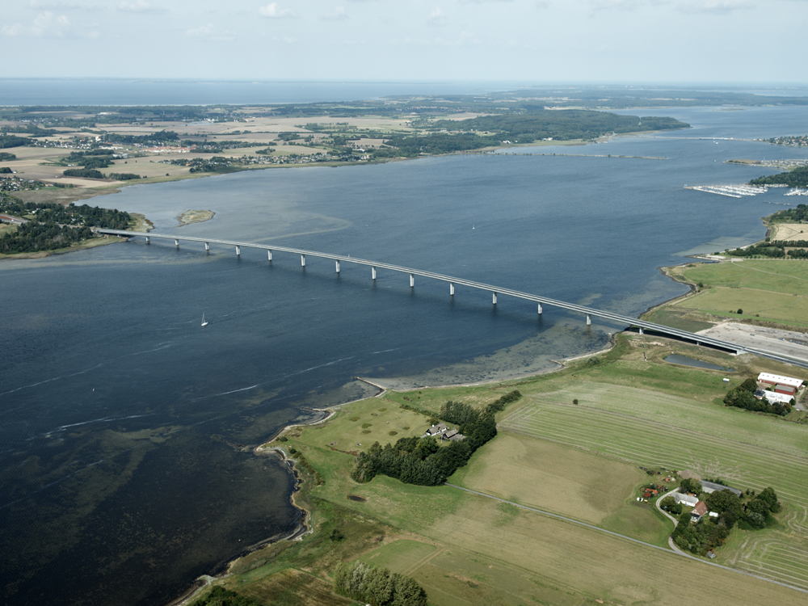

I denne video kan du se hvordan broer bliver bygget.

I videoen kan man se byggelse processen af Roskilde Fjords bro også kaldt Kronprinsesse Marys Bro. Den gule montagekranSom set i videoen bruger man en gul kran til at ligge fundationnen af broen.Montagekran kom fra Canada i 60 containere med cirka 5000 dele, som 12 mand hele vejen fra Italien havde til opgave at samle. Fakta om Broen
|